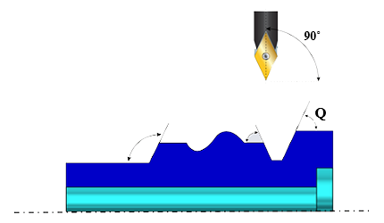
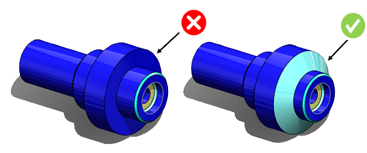

旋削パーツの外径において、プロファイルの逃げは、パーツの旋削加工を円滑に行うのに役立ちます。
旋削パーツの輪郭形状は、スタイラスおよび切削工具の変更回数を最小限に抑えつつ、容易にトレースできる形状である必要があります。側壁が平行な溝や、側壁が急峻な溝は、1回の加工で実現できません。
パーツの軸に対して最大 58° まで傾いた輪郭は、切削工具（およびスタイラス）で加工可能です。以下の画像は、輪郭が軸に対して直角（垂直）である場合の加工可能な輪郭を示しています。

ここで、
Q = 工具逃げ角（Tool Relief Angle）
旋削工具に適切な逃げを確保するため、外径プロファイルと回転軸に平行な面との間に形成される鋭角は、ユーザーが構成した値を超えてはなりません。
外径プロファイル上の工具逃げ角（Tool relief angle on outer diameter profile） のデフォルト構成値は 58 度以下です。
ユーザーは適切な値を構成できます。
ルールUIでは、材料の一覧が Map Material から読み込まれ、ユーザーは材料およびその値を構成できます。
材料とその値を構成した後、ユーザーは Ctrl+M コマンドを使用して、ルールUI内で材料グループおよびグレードとともに、構成済み材料の一覧をフィルタ表示できます。同じキー（Ctrl+M）を使用してフィルタをリセットすることもできます。
